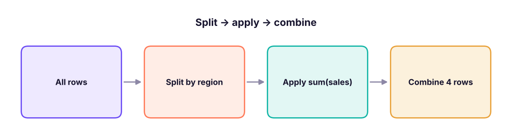
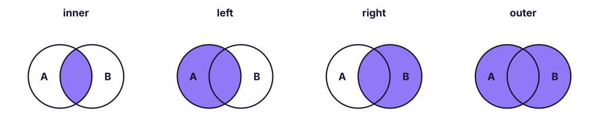
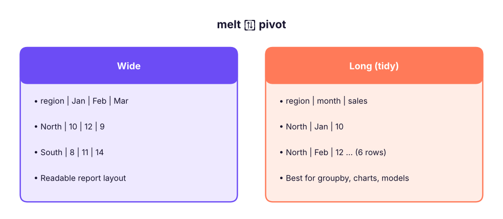

pandas III: GroupBy, Pivot Tables, Merge/Join and Reshape (melt/unpivot)
Summarise and combine data. Use groupby with agg, transform and filter, build pivot tables and crosstabs, join tables with merge (inner, left, right, outer, anti), stack with concat, and reshape between wide and long with melt, pivot, stack and unstack.
- Apply split-apply-combine with groupby, named aggregations and multiple keys
- Use transform for group-level columns and filter for group-level conditions
- Build pivot_table and crosstab summaries with totals and percentages
- Join DataFrames with merge, choose the join type, and validate the result
- Reshape wide ↔ long with melt (unpivot) and pivot, and combine with concat
Split–apply–combine
groupby splits rows into groups, applies a calculation to each group, and combines the results. It is SQL's GROUP BY and Excel's PivotTable.

import pandas as pd, numpy as np
pd.set_option("display.max_columns", 20); pd.set_option("display.width", 160)
s = pd.read_csv("superstore_sales.csv", parse_dates=["order_date"])
print(s.groupby("region")["sales"].sum().sort_values(ascending=False))
print(s.groupby(["region", "category"])["profit"].sum().round(0).unstack())region South 53952768.5 West 51958520.5 North 49018161.0 East 46484119.0 Name: sales, dtype: float64 category Furniture Office Supplies Technology region East -209426.0 434731.0 4149185.0 North -236825.0 331848.0 4460806.0 South -259193.0 349958.0 4611247.0 West -112710.0 398257.0 4434286.0
Named aggregations
summary = (s.groupby("category")
.agg(orders=("order_id", "nunique"), lines=("row_id", "size"), sales=("sales", "sum"),
profit=("profit", "sum"), avg_discount=("discount", "mean"), max_line=("sales", "max"))
.assign(margin_pct=lambda d: (100 * d.profit / d.sales).round(1))
.sort_values("sales", ascending=False))
print(summary.round(2))
print(s.groupby("segment", as_index=False)["sales"].agg(["sum", "mean", "median", "count"]).round(0)) orders lines sales profit avg_discount max_line margin_pct
category
Technology 1518 1892 156438412.5 17655523.58 0.07 619290.0 11.3
Furniture 1511 1917 34841853.0 -818153.31 0.13 93120.0 -2.3
Office Supplies 1870 2514 10133303.5 1514793.58 0.07 60830.0 14.9
segment sum mean median count
0 Consumer 98603292.0 32066.0 8288.0 3075
1 Corporate 59113619.0 31427.0 8480.0 1881
2 Home Office 43696658.0 31965.0 9079.0 1367Common aggregations: sum, mean, median, min, max, count (non-null), size (rows), nunique, std, first, last, or your own function.
transform and filter
transform returns a value for every row (the group result broadcast back), perfect for "share of group" and group-wise filling. filter keeps whole groups that meet a condition.
s["region_sales"] = s.groupby("region")["sales"].transform("sum")
s["share_of_region_%"] = (100 * s["sales"] / s["region_sales"]).round(3)
s["rank_in_region"] = s.groupby("region")["sales"].rank(ascending=False, method="first").astype(int)
print(s.loc[s.rank_in_region <= 2, ["region", "product_name", "sales", "share_of_region_%", "rank_in_region"]].sort_values(["region", "rank_in_region"]))
loyal = s.groupby("customer_id").filter(lambda g: g["order_id"].nunique() >= 8)
print(loyal["customer_id"].nunique(), "customers placed 8+ orders")region product_name sales share_of_region_% rank_in_region 6244 East Vertex Copier 262 472740.0 1.017 1 4219 East Orbit Copier 746 442350.0 0.952 2 3669 North Orbit Copier 746 619290.0 1.263 1 1653 North Orbit Copier 746 526396.5 1.074 2 1142 South Vertex Copier 262 551530.0 1.022 1 2087 South Vertex Copier 262 551530.0 1.022 2 1779 West Apex Copier 347 493080.0 0.949 1 3317 West Orbit Copier 746 477738.0 0.919 2 41 customers placed 8+ orders
Pivot tables and crosstabs
s["year"] = s["order_date"].dt.year
pt = pd.pivot_table(s, values="sales", index="category", columns="year", aggfunc="sum", margins=True, margins_name="Total")
print((pt / 1e6).round(2))
print(pd.crosstab(s["segment"], s["ship_mode"], normalize="index").mul(100).round(1)) # row %year 2023 2024 2025 Total category Furniture 9.95 12.13 12.76 34.84 Office Supplies 2.61 3.55 3.97 10.13 Technology 45.08 49.72 61.65 156.44 Total 57.64 65.40 78.38 201.41 ship_mode First Class Same Day Second Class Standard Class segment Consumer 15.2 5.5 19.5 59.8 Corporate 13.2 5.0 20.3 61.5 Home Office 16.9 4.3 19.5 59.3
Merging (joins)
Real analysis needs several tables. pd.merge (or df.merge) joins on key columns like SQL joins.

orders = pd.DataFrame({"order_id": [1, 2, 3, 4], "cust": ["C1", "C2", "C2", "C9"], "amount": [500, 250, 900, 120]})
cust = pd.DataFrame({"cust": ["C1", "C2", "C3"], "name": ["Asha", "Ravi", "Meera"], "city": ["Pune", "Delhi", "Kochi"]})
for how in ["inner", "left", "right", "outer"]:
print(how, "->", len(orders.merge(cust, on="cust", how=how)), "rows")
print(orders.merge(cust, on="cust", how="left", indicator=True))
anti = orders.merge(cust, on="cust", how="left", indicator=True).query("_merge == 'left_only'")
print("orders with unknown customer:", anti["order_id"].tolist())inner -> 3 rows left -> 4 rows right -> 4 rows outer -> 5 rows order_id cust amount name city _merge 0 1 C1 500 Asha Pune both 1 2 C2 250 Ravi Delhi both 2 3 C2 900 Ravi Delhi both 3 4 C9 120 NaN NaN left_only orders with unknown customer: [4]
| Argument | Use |
|---|---|
on="key" / on=["a", "b"] |
Same column name(s) in both |
left_on=, right_on= |
Different key names |
how= |
inner, left, right, outer, cross |
suffixes=("_x", "_y") |
Clashing column names |
indicator=True |
Adds _merge to see where each row came from |
validate="many_to_one" |
Raises an error if the key is not unique on the right |
A real three-table join
products = pd.read_csv("products.csv"); customers = pd.read_csv("customers.csv")
lines = s[["order_id", "customer_id", "product_id", "sales", "quantity"]]
full = (lines.merge(products[["product_id", "list_price"]], on="product_id", how="left", validate="many_to_one")
.merge(customers[["customer_id", "city", "segment"]], on="customer_id", how="left", validate="many_to_one"))
print(len(lines), len(full), full["list_price"].isna().sum(), "unmatched products")
full["realised_vs_list_%"] = (100 * full["sales"] / (full["list_price"] * full["quantity"])).round(1)
print(full.groupby("segment")["realised_vs_list_%"].mean().round(1))6323 6323 0 unmatched products segment Consumer 91.0 Corporate 91.1 Home Office 90.4 Name: realised_vs_list_%, dtype: float64
If the key is duplicated on both sides, a merge multiplies rows (many-to-many). Always compare row counts before and after, and use validate= to catch it.
concat: stacking tables
jan = pd.DataFrame({"store": ["A", "B"], "sales": [100, 80]}); feb = pd.DataFrame({"store": ["A", "C"], "sales": [120, 60]})
print(pd.concat([jan.assign(month="Jan"), feb.assign(month="Feb")], ignore_index=True)) # rows (UNION ALL)
print(pd.concat([jan.set_index("store"), feb.set_index("store")], axis=1, keys=["Jan", "Feb"])) # columns, aligned on index store sales month
0 A 100 Jan
1 B 80 Jan
2 A 120 Feb
3 C 60 Feb
Jan Feb
sales sales
store
A 100.0 120.0
B 80.0 NaN
C NaN 60.0Reshaping: wide ↔ long
Wide tables are easy to read (one column per month); long (tidy) tables are easy to analyse and chart (one row per observation). melt is pandas' unpivot (the same as Power Query's "Unpivot columns").

wide = pd.DataFrame({"region": ["North", "South"], "Jan": [10, 8], "Feb": [12, 11], "Mar": [9, 14]})
long = wide.melt(id_vars="region", var_name="month", value_name="sales")
print(long)
back = long.pivot(index="region", columns="month", values="sales")[["Jan", "Feb", "Mar"]]
print(back)
st = back.stack(); print(st.head(3)); print(st.unstack().equals(back)) region month sales
0 North Jan 10
1 South Jan 8
2 North Feb 12
3 South Feb 11
4 North Mar 9
5 South Mar 14
month Jan Feb Mar
region
North 10 12 9
South 8 11 14
region month
North Jan 10
Feb 12
Mar 9
dtype: int64
Truepivot requires unique index/column pairs; pivot_table aggregates duplicates.
monthly = (s.assign(month=s.order_date.dt.to_period("M").astype(str))
.pivot_table(index="month", columns="category", values="sales", aggfunc="sum").tail(3) / 1e6).round(2)
print(monthly)
print(monthly.reset_index().melt(id_vars="month", var_name="category", value_name="sales_m").head(4))category Furniture Office Supplies Technology
month
2025-10 1.15 0.31 4.68
2025-11 1.07 0.59 8.62
2025-12 1.31 0.40 5.94
month category sales_m
0 2025-10 Furniture 1.15
1 2025-11 Furniture 1.07
2 2025-12 Furniture 1.31
3 2025-10 Office Supplies 0.31Summary
groupby(keys).agg(name=(col, func))builds clean summaries;transformreturns group values per row;filterkeeps whole groups.pivot_table(withmargins=True) andcrosstab(withnormalize) mirror Excel PivotTables.merge(on=, how=)joins tables; check row counts, useindicator=Truefor anti-joins andvalidate=to prevent row explosions.concatstacks rows (or aligns columns).melt= unpivot (wide → long);pivot/pivot_table= long → wide;stack/unstackmove index levels.
1. Which returns one value per original row?
2. Which merge keeps every order even when the customer is missing?
3. How do you find rows in A with no match in B?
4. What does melt do?
pivot goes the other way.5. A merge produced more rows than the left table. Most likely cause?
validate="many_to_one" to catch this.6. How do you add a grand-total row and column to a pivot table?
margins_name changes the label.(1) Sales and profit by year and region, with margin %. (2) For each customer, the share of their spend in each category (use transform). (3) Top product per sub-category by profit. (4) Customers in customers.csv with no orders (anti-join). (5) Melt the year columns of a category × year pivot back to long format.
Show solution
yr = s.groupby(["year", "region"]).agg(sales=("sales", "sum"), profit=("profit", "sum"))
yr["margin_%"] = (100 * yr.profit / yr.sales).round(1); print(yr)
cc = s.groupby(["customer_id", "category"])["sales"].sum().reset_index()
cc["share"] = cc.sales / cc.groupby("customer_id")["sales"].transform("sum")
top = s.groupby(["sub_category", "product_name"])["profit"].sum().reset_index().sort_values("profit").groupby("sub_category").tail(1)
no_orders = customers.merge(s[["customer_id"]].drop_duplicates(), how="left", indicator=True).query("_merge == 'left_only'")
print(len(no_orders))
pt = s.pivot_table(index="category", columns="year", values="sales", aggfunc="sum")
print(pt.reset_index().melt(id_vars="category", var_name="year", value_name="sales"))Q: Difference between agg and transform?
agg reduces each group to one row; transform returns an output aligned to the original rows.
Q: How would you compute each product's share of its category's sales?
df.sales / df.groupby("category").sales.transform("sum").
Q: merge vs join vs concat?
merge joins on columns (SQL-style); join is a shortcut that joins on the index; concat stacks along an axis without matching keys.
Q: What is tidy data?
Each variable is a column, each observation a row, each value a cell; long format produced by melt is tidy.
Practise more online
Free, trusted places to test yourself on this topic. Links open the original site in a new tab.